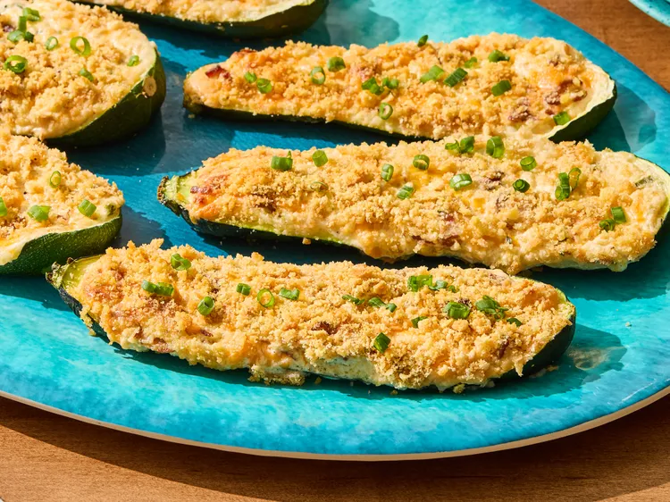

HOME
Million Dollar Stuffed Zucchini

Description:
In this million dollar stuffed zucchini recipe,
zucchini halves are stuffed with a seasoned
mixture of bacon, Cheddar cheese, and toasted
almonds with a buttery Ritz cracker topping.
Baked until golden and bubbly, these zucchini boats
are comfort food that’s impressive enough for guests
yet easy enough for a weeknight dinner.
Ingredients:
- 3 large zucchini
- 1/2 cup slivered almonds
- 6 slices bacon, chopped
- 1/2 cup sliced green onions, plus more for garnish
- 8 ounces cream cheese, softened
- 1/2 cup mayonnaise
- 2 cups shredded Cheddar cheese
- 1/8 teaspoon cayenne pepper
- 1/2 cup crushed buttery round crackers (12 crackers)
Steps:
- Preheat the oven to 375 degrees F (190 degrees C). Line a 10x15-inch rimmed baking sheet with foil.
- Cut zucchini in half lengthwise. Scoop out pulp with a melon baller or small measuring spoon, leaving 1/4-inch thick shells. Chop pulp (you should have about 3 cups).
- Toast almonds in a large dry skillet over medium heat until lightly browned and fragrant, about 4 minutes; remove from skillet.
- Cook bacon in a skillet over medium heat until crisp, about 8 minutes. Drain on paper towels.
- Drain all but 1 tablespoon of bacon grease from the skillet. Add zucchini pulp and green onions to the skillet. Cook and stir until tender and any liquid evaporates, about 10 minutes.
- Beat cream cheese with an electric mixer in a large bowl until smooth. Beat in mayonnaise.
- Stir in almonds, bacon, zucchini pulp mixture, Cheddar cheese, and cayenne pepper.
- Stuff zucchini shells with the mixture, heaping full. Arrange shells in prepared baking sheet. Sprinkle with cracker crumbs.
- Bake until zucchini is tender and filling is browned and bubbly, 30 to 35 minutes. Garnish with additional green onions.